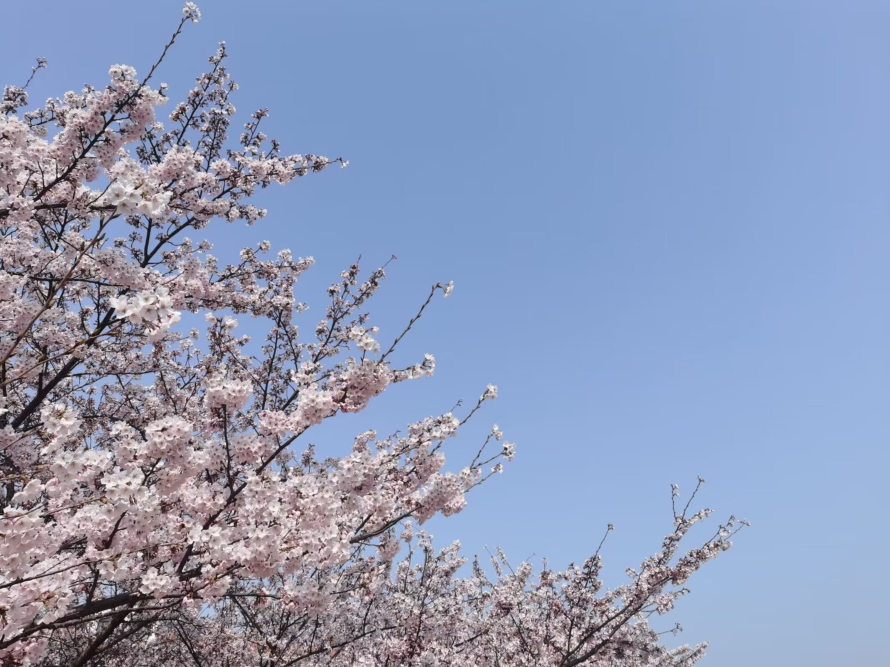

Icey's special places
Welcome to Tsingtao! I've been living here for several years,
and this city holds so many memories for me. I love the weather here—
it's always sunny and pleasantly cool. Being so close to the sea
offers the best views imaginable.
I've made many friends here; they are amazing, and I always miss them.
[2020 Nov 9]
I love how the plants here thrive under the sun, full of life and energy.
[2020 Nov]
With a professional camera, this could make an incredible photo.
I can't quite recall if it was moonlight or the light from the sidewalk.
The person in the shot is my roommate. Miss you!
[2020 Dec]
First time seeing how a snowflake looks—gorgeous! The gloves were a gift from a
former classmate, and they worked great! Unfortunately, I lost one of them.
[2020 Dec]
This is my favorite spot, offering a perfect view of the sunset.
It's at the end of the corridor where I live. I especially love the moments
right after the sun sets, when it's still bright. It's that magical time between
day and night, with the sky looking so pure and transparent.
[2020 Dec 29]
After finishing my classes and heading back, I came across a cute snowman,
as if it was saying hello to me! It happened to be on my birthday, so I took it
as a little surprise just for me. I love the feeling of stumbling upon something
interesting like that.
[2020 Dec 29]
I was so happy that day—the first snow fell on my birthday! Everything looked perfect.
I cherished every inch of snow as a wonderful gift. My mom and dad were also happy for me.
They always keep an eye on the weather where I am. Thank you, Mom and Dad!
[2021 Jan]
When winter comes, the weather in Tsingtao is always so lovely, with wonderful sunshine.
I couldn't help but fall in love with this place.
[2021 Jan 7] During that time, the heating system was damaged and under repair.
The temperature was between -10°C and -16°C! It's freezing cold! Here's how ShiLaoRen Beach looks
at that time.
[2021 Jan 9]
This picture was taken in the classroom while I was studying, with soft sunshine shining down on me.
I went to check outside and found the sky was so beautiful! It instantly relieved all my stress.
[2022 Apr 8]
I went on an adventure with my roommate, and we explored a dark, scary cave.
There was no light inside, and the walls were covered in bat droppings.
We came across a snake as soon as we got out!

[2022 Apr 8]
I never knew what cherry blossoms looked like until I came to Tsingtao.
When the wind blows, it's like a cherry blossom rain. I love it!
 [2022 Jun 3]
I love the playground. After a 5km jog, it's so nice to lie on top of a tire or just on the ground.
I bet I'll really miss this feeling (I did).
[2022 Jun 3]
I love the playground. After a 5km jog, it's so nice to lie on top of a tire or just on the ground.
I bet I'll really miss this feeling (I did).
[2022 Aug 4] I took this picture at Xiaoqingdao Park, where you
get the best view of Zhanqiao. I visited with a friend who showed me how to
take a great photo—haha! This friend took me to many beautiful places I had
never been to before. Thank you! I really had a wonderful day!
[2022 Aug 27] I visited Laoshan, the famous mountain here,
on my own (have no idea why people don't like hiking these days).
The view is absolutely splendid. I took a picture,
and it turned out amazing.
[2022 Dec 1]
There's a park near where I live that I visit very often. It's close to the beach and offers
a wonderful view. I've been jogging there several times with my partner. This park is incredibly long!
[2023 Jul]
On the way to Nanjing city for a work trip with my partner, we enjoyed some wonderful views from the railway.
[2023 Aug]
This picture was taken in Rizhao city. The beach is cleaner than in Tsingtao,
and the sand is softer. When the moon shines down, it feels like wandering in a dream.
[2023 Dec 17] This was taken in Yantai city, by my partner.
It brings back memories of my first big snowball!! It was freezing cold there,
with so much snow that the transportation system was completely disrupted.
P.S: there's no subway, which makes it worse.